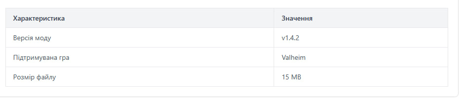
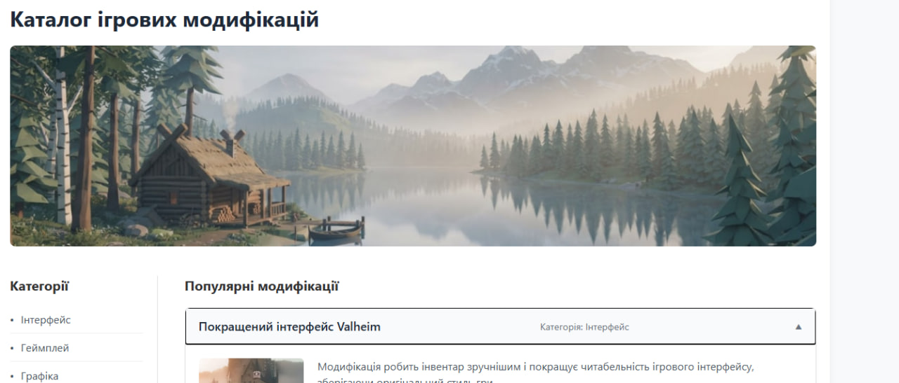
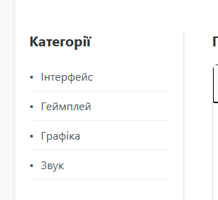
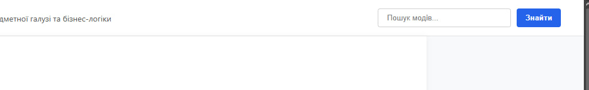

Тема, Мета, Місце розташування сайту та звіту
Тема:
ТЕГИ ТА АТРИБУТИ HTML-ДОКУМЕНТА. СТРУКТУРНА РОЗМІТКА. GIT. GITHUB. РОБОТА З РЕПОЗИТОРІЯМИ. ОПИС ЛОГІКИ ВЛАСНОГО WEB-ЗАСТОСУНКУ.
Мета:
Придбати практичні навички роботи з GitHub, репозиторіями, HTML-документом, таблицями, зображеннями, посиланнями, списками, формами. Створити шаблон звітного HTML-документа.
Місце розташування:
- Посилання на репозиторій звітного документа: Перейти до репозиторію звіту
- Посилання на живу сторінку звіту: Перейти на сторінку звіту
- Посилання на репозиторій WEB-застосунку: Перейти до репозиторію застосунку
- Посилання на живу сторінку WEB-застосунку: Перейти на сторінку застосунку
Опис предметного середовища та бізнес-логіки
Предметна галузь: Платформа для публікації та завантаження користувацьких модифікацій (модів) для відеоігор. Застосунок є каталогом з можливістю пошуку, фільтрації та перегляду деталей модифікацій.
Бізнес-логіка: Користувач відкриває головну сторінку -> використовує навігацію або пошукову форму для знаходження моду -> переглядає детальну сторінку з характеристиками (таблиця) -> завантажує файл.
HTML-код ТАБЛИЦІ
Теорія
Для створення таблиць використовується тег <table>. Рядки створюються тегом <tr>, заголовки стовпців — <th>, а звичайні комірки даних — <td>. Основні атрибути: border (рамка), colspan (об'єднання стовпців), rowspan (об'єднання рядків).
Скріншот

Код
<table class="mod-table">
<thead>
<tr>
<th>Характеристика</th>
<th>Значення</th>
</tr>
</thead>
<tbody>
<tr>
<td>Версія моду</td>
<td>v1.4.2</td>
</tr>
</tbody>
</table>
HTML-код ЗОБРАЖЕННЯ
Теорія
Для вставки зображень використовується одинарний тег <img>. Обов'язкові атрибути: src (шлях до файлу) та alt (альтернативний текст). Також використовуються width та height для розмірів.
Скріншот

Код
<img src="image/logo.jpg" alt="Банер ігрового каталогу" class="hero-image">
HTML-код СПИСКІВ
Теорія
Існують маркіровані списки <ul> та нумеровані <ol>. Кожен елемент списку обгортається тегом <li>. Для нумерованих списків застосовують атрибут type для зміни стилю нумерації.
Скріншот

Код
<ul>
<li>Інтерфейс</li>
<li>Геймплей</li>
<li>Графіка</li>
<li>Звук</li>
</ul>
HTML-код ФОРМИ
Скріншот

Код
<form class="search-form" action="#" method="GET">
<input type="text" name="query" placeholder="Пошук модів...">
<button type="submit">Знайти</button>
</form>
ВИСНОВКИ
Під час виконання першої лабораторної роботи я набув практичних навичок роботи з системою контролю версій Git та платформою GitHub. Було успішно створено репозиторії для звітного документа та власного WEB-застосунку, а також налаштовано їх хостинг за допомогою GitHub Pages. Я розробив структуру веб-каталогу ігрових модифікацій, застосувавши на практиці основні HTML-теги для роботи з текстом, зображеннями, таблицями, формами та списками. Крім того, я навчився відокремлювати контент від оформлення за допомогою CSS та створювати семантично правильну розмітку сторінки.